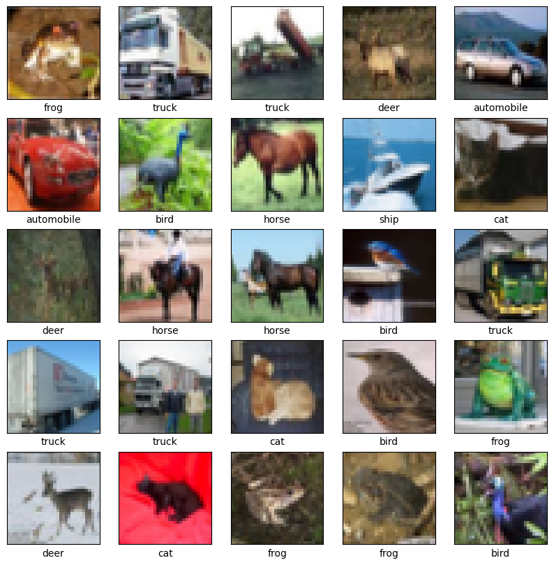
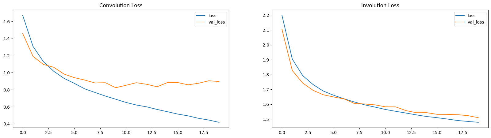
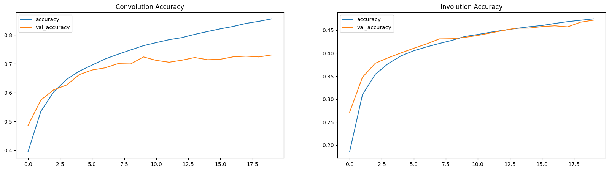
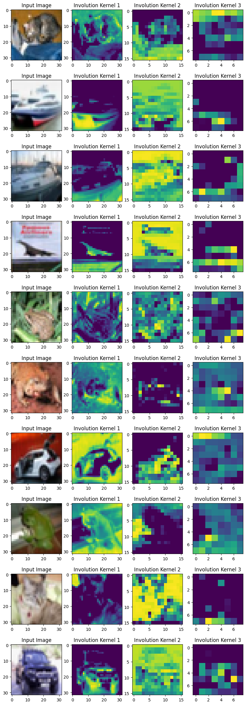

Involutional neural networks
Author: Aritra Roy Gosthipaty
Date created: 2021/07/25
Last modified: 2021/07/25
Description: Deep dive into location-specific and channel-agnostic "involution" kernels.

Introduction
Convolution has been the basis of most modern neural networks for computer vision. A convolution kernel is spatial-agnostic and channel-specific. Because of this, it isn't able to adapt to different visual patterns with respect to different spatial locations. Along with location-related problems, the receptive field of convolution creates challenges with regard to capturing long-range spatial interactions.
To address the above issues, Li et. al. rethink the properties of convolution in Involution: Inverting the Inherence of Convolution for VisualRecognition. The authors propose the "involution kernel", that is location-specific and channel-agnostic. Due to the location-specific nature of the operation, the authors say that self-attention falls under the design paradigm of involution.
This example describes the involution kernel, compares two image classification models, one with convolution and the other with involution, and also tries drawing a parallel with the self-attention layer.
Setup
import os
os.environ["KERAS_BACKEND"] = "tensorflow"
import tensorflow as tf
import keras
import matplotlib.pyplot as plt
# Set seed for reproducibility.
tf.random.set_seed(42)
Convolution
Convolution remains the mainstay of deep neural networks for computer vision. To understand Involution, it is necessary to talk about the convolution operation.

Consider an input tensor X with dimensions H, W and C_in. We take a collection of C_out convolution kernels each of shape K, K, C_in. With the multiply-add operation between the input tensor and the kernels we obtain an output tensor Y with dimensions H, W, C_out.
In the diagram above C_out=3. This makes the output tensor of shape H,
W and 3. One can notice that the convoltuion kernel does not depend on
the spatial position of the input tensor which makes it
location-agnostic. On the other hand, each channel in the output
tensor is based on a specific convolution filter which makes is
channel-specific.
Involution
The idea is to have an operation that is both location-specific and channel-agnostic. Trying to implement these specific properties poses a challenge. With a fixed number of involution kernels (for each spatial position) we will not be able to process variable-resolution input tensors.
To solve this problem, the authors have considered generating each kernel conditioned on specific spatial positions. With this method, we should be able to process variable-resolution input tensors with ease. The diagram below provides an intuition on this kernel generation method.

class Involution(keras.layers.Layer):
def __init__(
self, channel, group_number, kernel_size, stride, reduction_ratio, name
):
super().__init__(name=name)
# Initialize the parameters.
self.channel = channel
self.group_number = group_number
self.kernel_size = kernel_size
self.stride = stride
self.reduction_ratio = reduction_ratio
def build(self, input_shape):
# Get the shape of the input.
(_, height, width, num_channels) = input_shape
# Scale the height and width with respect to the strides.
height = height // self.stride
width = width // self.stride
# Define a layer that average pools the input tensor
# if stride is more than 1.
self.stride_layer = (
keras.layers.AveragePooling2D(
pool_size=self.stride, strides=self.stride, padding="same"
)
if self.stride > 1
else tf.identity
)
# Define the kernel generation layer.
self.kernel_gen = keras.Sequential(
[
keras.layers.Conv2D(
filters=self.channel // self.reduction_ratio, kernel_size=1
),
keras.layers.BatchNormalization(),
keras.layers.ReLU(),
keras.layers.Conv2D(
filters=self.kernel_size * self.kernel_size * self.group_number,
kernel_size=1,
),
]
)
# Define reshape layers
self.kernel_reshape = keras.layers.Reshape(
target_shape=(
height,
width,
self.kernel_size * self.kernel_size,
1,
self.group_number,
)
)
self.input_patches_reshape = keras.layers.Reshape(
target_shape=(
height,
width,
self.kernel_size * self.kernel_size,
num_channels // self.group_number,
self.group_number,
)
)
self.output_reshape = keras.layers.Reshape(
target_shape=(height, width, num_channels)
)
def call(self, x):
# Generate the kernel with respect to the input tensor.
# B, H, W, K*K*G
kernel_input = self.stride_layer(x)
kernel = self.kernel_gen(kernel_input)
# reshape the kerenl
# B, H, W, K*K, 1, G
kernel = self.kernel_reshape(kernel)
# Extract input patches.
# B, H, W, K*K*C
input_patches = tf.image.extract_patches(
images=x,
sizes=[1, self.kernel_size, self.kernel_size, 1],
strides=[1, self.stride, self.stride, 1],
rates=[1, 1, 1, 1],
padding="SAME",
)
# Reshape the input patches to align with later operations.
# B, H, W, K*K, C//G, G
input_patches = self.input_patches_reshape(input_patches)
# Compute the multiply-add operation of kernels and patches.
# B, H, W, K*K, C//G, G
output = tf.multiply(kernel, input_patches)
# B, H, W, C//G, G
output = tf.reduce_sum(output, axis=3)
# Reshape the output kernel.
# B, H, W, C
output = self.output_reshape(output)
# Return the output tensor and the kernel.
return output, kernel
Testing the Involution layer
# Define the input tensor.
input_tensor = tf.random.normal((32, 256, 256, 3))
# Compute involution with stride 1.
output_tensor, _ = Involution(
channel=3, group_number=1, kernel_size=5, stride=1, reduction_ratio=1, name="inv_1"
)(input_tensor)
print(f"with stride 1 ouput shape: {output_tensor.shape}")
# Compute involution with stride 2.
output_tensor, _ = Involution(
channel=3, group_number=1, kernel_size=5, stride=2, reduction_ratio=1, name="inv_2"
)(input_tensor)
print(f"with stride 2 ouput shape: {output_tensor.shape}")
# Compute involution with stride 1, channel 16 and reduction ratio 2.
output_tensor, _ = Involution(
channel=16, group_number=1, kernel_size=5, stride=1, reduction_ratio=2, name="inv_3"
)(input_tensor)
print(
"with channel 16 and reduction ratio 2 ouput shape: {}".format(output_tensor.shape)
)
with stride 1 ouput shape: (32, 256, 256, 3)
with stride 2 ouput shape: (32, 128, 128, 3)
with channel 16 and reduction ratio 2 ouput shape: (32, 256, 256, 3)
Image Classification
In this section, we will build an image-classifier model. There will be two models one with convolutions and the other with involutions.
The image-classification model is heavily inspired by this Convolutional Neural Network (CNN) tutorial from Google.
Get the CIFAR10 Dataset
# Load the CIFAR10 dataset.
print("loading the CIFAR10 dataset...")
(
(train_images, train_labels),
(
test_images,
test_labels,
),
) = keras.datasets.cifar10.load_data()
# Normalize pixel values to be between 0 and 1.
(train_images, test_images) = (train_images / 255.0, test_images / 255.0)
# Shuffle and batch the dataset.
train_ds = (
tf.data.Dataset.from_tensor_slices((train_images, train_labels))
.shuffle(256)
.batch(256)
)
test_ds = tf.data.Dataset.from_tensor_slices((test_images, test_labels)).batch(256)
loading the CIFAR10 dataset...
Visualise the data
class_names = [
"airplane",
"automobile",
"bird",
"cat",
"deer",
"dog",
"frog",
"horse",
"ship",
"truck",
]
plt.figure(figsize=(10, 10))
for i in range(25):
plt.subplot(5, 5, i + 1)
plt.xticks([])
plt.yticks([])
plt.grid(False)
plt.imshow(train_images[i])
plt.xlabel(class_names[train_labels[i][0]])
plt.show()

Convolutional Neural Network
# Build the conv model.
print("building the convolution model...")
conv_model = keras.Sequential(
[
keras.layers.Conv2D(32, (3, 3), input_shape=(32, 32, 3), padding="same"),
keras.layers.ReLU(name="relu1"),
keras.layers.MaxPooling2D((2, 2)),
keras.layers.Conv2D(64, (3, 3), padding="same"),
keras.layers.ReLU(name="relu2"),
keras.layers.MaxPooling2D((2, 2)),
keras.layers.Conv2D(64, (3, 3), padding="same"),
keras.layers.ReLU(name="relu3"),
keras.layers.Flatten(),
keras.layers.Dense(64, activation="relu"),
keras.layers.Dense(10),
]
)
# Compile the mode with the necessary loss function and optimizer.
print("compiling the convolution model...")
conv_model.compile(
optimizer="adam",
loss=keras.losses.SparseCategoricalCrossentropy(from_logits=True),
metrics=["accuracy"],
)
# Train the model.
print("conv model training...")
conv_hist = conv_model.fit(train_ds, epochs=20, validation_data=test_ds)
building the convolution model...
compiling the convolution model...
conv model training...
Epoch 1/20
196/196 ━━━━━━━━━━━━━━━━━━━━ 6s 15ms/step - accuracy: 0.3068 - loss: 1.9000 - val_accuracy: 0.4861 - val_loss: 1.4593
Epoch 2/20
196/196 ━━━━━━━━━━━━━━━━━━━━ 1s 4ms/step - accuracy: 0.5153 - loss: 1.3603 - val_accuracy: 0.5741 - val_loss: 1.1913
Epoch 3/20
196/196 ━━━━━━━━━━━━━━━━━━━━ 1s 5ms/step - accuracy: 0.5949 - loss: 1.1517 - val_accuracy: 0.6095 - val_loss: 1.0965
Epoch 4/20
196/196 ━━━━━━━━━━━━━━━━━━━━ 1s 5ms/step - accuracy: 0.6414 - loss: 1.0330 - val_accuracy: 0.6260 - val_loss: 1.0635
Epoch 5/20
196/196 ━━━━━━━━━━━━━━━━━━━━ 1s 5ms/step - accuracy: 0.6690 - loss: 0.9485 - val_accuracy: 0.6622 - val_loss: 0.9833
Epoch 6/20
196/196 ━━━━━━━━━━━━━━━━━━━━ 1s 5ms/step - accuracy: 0.6951 - loss: 0.8764 - val_accuracy: 0.6783 - val_loss: 0.9413
Epoch 7/20
196/196 ━━━━━━━━━━━━━━━━━━━━ 1s 5ms/step - accuracy: 0.7122 - loss: 0.8167 - val_accuracy: 0.6856 - val_loss: 0.9134
Epoch 8/20
196/196 ━━━━━━━━━━━━━━━━━━━━ 1s 4ms/step - accuracy: 0.7299 - loss: 0.7709 - val_accuracy: 0.7001 - val_loss: 0.8792
Epoch 9/20
196/196 ━━━━━━━━━━━━━━━━━━━━ 1s 4ms/step - accuracy: 0.7467 - loss: 0.7288 - val_accuracy: 0.6992 - val_loss: 0.8821
Epoch 10/20
196/196 ━━━━━━━━━━━━━━━━━━━━ 1s 4ms/step - accuracy: 0.7591 - loss: 0.6982 - val_accuracy: 0.7235 - val_loss: 0.8237
Epoch 11/20
196/196 ━━━━━━━━━━━━━━━━━━━━ 1s 4ms/step - accuracy: 0.7725 - loss: 0.6550 - val_accuracy: 0.7115 - val_loss: 0.8521
Epoch 12/20
196/196 ━━━━━━━━━━━━━━━━━━━━ 1s 5ms/step - accuracy: 0.7808 - loss: 0.6302 - val_accuracy: 0.7051 - val_loss: 0.8823
Epoch 13/20
196/196 ━━━━━━━━━━━━━━━━━━━━ 1s 5ms/step - accuracy: 0.7860 - loss: 0.6101 - val_accuracy: 0.7122 - val_loss: 0.8635
Epoch 14/20
196/196 ━━━━━━━━━━━━━━━━━━━━ 1s 5ms/step - accuracy: 0.7998 - loss: 0.5786 - val_accuracy: 0.7214 - val_loss: 0.8348
Epoch 15/20
196/196 ━━━━━━━━━━━━━━━━━━━━ 1s 5ms/step - accuracy: 0.8117 - loss: 0.5473 - val_accuracy: 0.7139 - val_loss: 0.8835
Epoch 16/20
196/196 ━━━━━━━━━━━━━━━━━━━━ 1s 5ms/step - accuracy: 0.8168 - loss: 0.5267 - val_accuracy: 0.7155 - val_loss: 0.8840
Epoch 17/20
196/196 ━━━━━━━━━━━━━━━━━━━━ 1s 5ms/step - accuracy: 0.8266 - loss: 0.5022 - val_accuracy: 0.7239 - val_loss: 0.8576
Epoch 18/20
196/196 ━━━━━━━━━━━━━━━━━━━━ 1s 5ms/step - accuracy: 0.8374 - loss: 0.4750 - val_accuracy: 0.7262 - val_loss: 0.8756
Epoch 19/20
196/196 ━━━━━━━━━━━━━━━━━━━━ 1s 5ms/step - accuracy: 0.8452 - loss: 0.4505 - val_accuracy: 0.7235 - val_loss: 0.9049
Epoch 20/20
196/196 ━━━━━━━━━━━━━━━━━━━━ 1s 4ms/step - accuracy: 0.8531 - loss: 0.4283 - val_accuracy: 0.7304 - val_loss: 0.8962
Involutional Neural Network
# Build the involution model.
print("building the involution model...")
inputs = keras.Input(shape=(32, 32, 3))
x, _ = Involution(
channel=3, group_number=1, kernel_size=3, stride=1, reduction_ratio=2, name="inv_1"
)(inputs)
x = keras.layers.ReLU()(x)
x = keras.layers.MaxPooling2D((2, 2))(x)
x, _ = Involution(
channel=3, group_number=1, kernel_size=3, stride=1, reduction_ratio=2, name="inv_2"
)(x)
x = keras.layers.ReLU()(x)
x = keras.layers.MaxPooling2D((2, 2))(x)
x, _ = Involution(
channel=3, group_number=1, kernel_size=3, stride=1, reduction_ratio=2, name="inv_3"
)(x)
x = keras.layers.ReLU()(x)
x = keras.layers.Flatten()(x)
x = keras.layers.Dense(64, activation="relu")(x)
outputs = keras.layers.Dense(10)(x)
inv_model = keras.Model(inputs=[inputs], outputs=[outputs], name="inv_model")
# Compile the mode with the necessary loss function and optimizer.
print("compiling the involution model...")
inv_model.compile(
optimizer="adam",
loss=keras.losses.SparseCategoricalCrossentropy(from_logits=True),
metrics=["accuracy"],
)
# train the model
print("inv model training...")
inv_hist = inv_model.fit(train_ds, epochs=20, validation_data=test_ds)
building the involution model...
compiling the involution model...
inv model training...
Epoch 1/20
196/196 ━━━━━━━━━━━━━━━━━━━━ 9s 25ms/step - accuracy: 0.1369 - loss: 2.2728 - val_accuracy: 0.2716 - val_loss: 2.1041
Epoch 2/20
196/196 ━━━━━━━━━━━━━━━━━━━━ 1s 5ms/step - accuracy: 0.2922 - loss: 1.9489 - val_accuracy: 0.3478 - val_loss: 1.8275
Epoch 3/20
196/196 ━━━━━━━━━━━━━━━━━━━━ 1s 5ms/step - accuracy: 0.3477 - loss: 1.8098 - val_accuracy: 0.3782 - val_loss: 1.7435
Epoch 4/20
196/196 ━━━━━━━━━━━━━━━━━━━━ 1s 6ms/step - accuracy: 0.3741 - loss: 1.7420 - val_accuracy: 0.3901 - val_loss: 1.6943
Epoch 5/20
196/196 ━━━━━━━━━━━━━━━━━━━━ 1s 5ms/step - accuracy: 0.3931 - loss: 1.6942 - val_accuracy: 0.4007 - val_loss: 1.6639
Epoch 6/20
196/196 ━━━━━━━━━━━━━━━━━━━━ 1s 5ms/step - accuracy: 0.4057 - loss: 1.6622 - val_accuracy: 0.4108 - val_loss: 1.6494
Epoch 7/20
196/196 ━━━━━━━━━━━━━━━━━━━━ 1s 6ms/step - accuracy: 0.4134 - loss: 1.6374 - val_accuracy: 0.4202 - val_loss: 1.6363
Epoch 8/20
196/196 ━━━━━━━━━━━━━━━━━━━━ 1s 6ms/step - accuracy: 0.4200 - loss: 1.6166 - val_accuracy: 0.4312 - val_loss: 1.6062
Epoch 9/20
196/196 ━━━━━━━━━━━━━━━━━━━━ 1s 5ms/step - accuracy: 0.4286 - loss: 1.5949 - val_accuracy: 0.4316 - val_loss: 1.6018
Epoch 10/20
196/196 ━━━━━━━━━━━━━━━━━━━━ 1s 5ms/step - accuracy: 0.4346 - loss: 1.5794 - val_accuracy: 0.4346 - val_loss: 1.5963
Epoch 11/20
196/196 ━━━━━━━━━━━━━━━━━━━━ 1s 6ms/step - accuracy: 0.4395 - loss: 1.5641 - val_accuracy: 0.4388 - val_loss: 1.5831
Epoch 12/20
196/196 ━━━━━━━━━━━━━━━━━━━━ 1s 5ms/step - accuracy: 0.4445 - loss: 1.5502 - val_accuracy: 0.4443 - val_loss: 1.5826
Epoch 13/20
196/196 ━━━━━━━━━━━━━━━━━━━━ 1s 6ms/step - accuracy: 0.4493 - loss: 1.5391 - val_accuracy: 0.4497 - val_loss: 1.5574
Epoch 14/20
196/196 ━━━━━━━━━━━━━━━━━━━━ 1s 6ms/step - accuracy: 0.4528 - loss: 1.5255 - val_accuracy: 0.4547 - val_loss: 1.5433
Epoch 15/20
196/196 ━━━━━━━━━━━━━━━━━━━━ 1s 4ms/step - accuracy: 0.4575 - loss: 1.5148 - val_accuracy: 0.4548 - val_loss: 1.5438
Epoch 16/20
196/196 ━━━━━━━━━━━━━━━━━━━━ 1s 6ms/step - accuracy: 0.4599 - loss: 1.5072 - val_accuracy: 0.4581 - val_loss: 1.5323
Epoch 17/20
196/196 ━━━━━━━━━━━━━━━━━━━━ 1s 6ms/step - accuracy: 0.4664 - loss: 1.4957 - val_accuracy: 0.4598 - val_loss: 1.5321
Epoch 18/20
196/196 ━━━━━━━━━━━━━━━━━━━━ 1s 6ms/step - accuracy: 0.4701 - loss: 1.4863 - val_accuracy: 0.4575 - val_loss: 1.5302
Epoch 19/20
196/196 ━━━━━━━━━━━━━━━━━━━━ 1s 6ms/step - accuracy: 0.4737 - loss: 1.4790 - val_accuracy: 0.4676 - val_loss: 1.5233
Epoch 20/20
196/196 ━━━━━━━━━━━━━━━━━━━━ 1s 6ms/step - accuracy: 0.4771 - loss: 1.4740 - val_accuracy: 0.4719 - val_loss: 1.5096
Comparisons
In this section, we will be looking at both the models and compare a few pointers.
Parameters
One can see that with a similar architecture the parameters in a CNN is much larger than that of an INN (Involutional Neural Network).
conv_model.summary()
inv_model.summary()
Model: "sequential_3"
┏━━━━━━━━━━━━━━━━━━━━━━━━━━━━━━━━━┳━━━━━━━━━━━━━━━━━━━━━━━━━━━┳━━━━━━━━━━━━┓ ┃ Layer (type) ┃ Output Shape ┃ Param # ┃ ┡━━━━━━━━━━━━━━━━━━━━━━━━━━━━━━━━━╇━━━━━━━━━━━━━━━━━━━━━━━━━━━╇━━━━━━━━━━━━┩ │ conv2d_6 (Conv2D) │ (None, 32, 32, 32) │ 896 │ ├─────────────────────────────────┼───────────────────────────┼────────────┤ │ relu1 (ReLU) │ (None, 32, 32, 32) │ 0 │ ├─────────────────────────────────┼───────────────────────────┼────────────┤ │ max_pooling2d (MaxPooling2D) │ (None, 16, 16, 32) │ 0 │ ├─────────────────────────────────┼───────────────────────────┼────────────┤ │ conv2d_7 (Conv2D) │ (None, 16, 16, 64) │ 18,496 │ ├─────────────────────────────────┼───────────────────────────┼────────────┤ │ relu2 (ReLU) │ (None, 16, 16, 64) │ 0 │ ├─────────────────────────────────┼───────────────────────────┼────────────┤ │ max_pooling2d_1 (MaxPooling2D) │ (None, 8, 8, 64) │ 0 │ ├─────────────────────────────────┼───────────────────────────┼────────────┤ │ conv2d_8 (Conv2D) │ (None, 8, 8, 64) │ 36,928 │ ├─────────────────────────────────┼───────────────────────────┼────────────┤ │ relu3 (ReLU) │ (None, 8, 8, 64) │ 0 │ ├─────────────────────────────────┼───────────────────────────┼────────────┤ │ flatten (Flatten) │ (None, 4096) │ 0 │ ├─────────────────────────────────┼───────────────────────────┼────────────┤ │ dense (Dense) │ (None, 64) │ 262,208 │ ├─────────────────────────────────┼───────────────────────────┼────────────┤ │ dense_1 (Dense) │ (None, 10) │ 650 │ └─────────────────────────────────┴───────────────────────────┴────────────┘
Total params: 957,536 (3.65 MB)
Trainable params: 319,178 (1.22 MB)
Non-trainable params: 0 (0.00 B)
Optimizer params: 638,358 (2.44 MB)
Model: "inv_model"
┏━━━━━━━━━━━━━━━━━━━━━━━━━━━━━━━━━┳━━━━━━━━━━━━━━━━━━━━━━━━━━━┳━━━━━━━━━━━━┓ ┃ Layer (type) ┃ Output Shape ┃ Param # ┃ ┡━━━━━━━━━━━━━━━━━━━━━━━━━━━━━━━━━╇━━━━━━━━━━━━━━━━━━━━━━━━━━━╇━━━━━━━━━━━━┩ │ input_layer_4 (InputLayer) │ (None, 32, 32, 3) │ 0 │ ├─────────────────────────────────┼───────────────────────────┼────────────┤ │ inv_1 (Involution) │ [(None, 32, 32, 3), │ 26 │ │ │ (None, 32, 32, 9, 1, 1)] │ │ ├─────────────────────────────────┼───────────────────────────┼────────────┤ │ re_lu_4 (ReLU) │ (None, 32, 32, 3) │ 0 │ ├─────────────────────────────────┼───────────────────────────┼────────────┤ │ max_pooling2d_2 (MaxPooling2D) │ (None, 16, 16, 3) │ 0 │ ├─────────────────────────────────┼───────────────────────────┼────────────┤ │ inv_2 (Involution) │ [(None, 16, 16, 3), │ 26 │ │ │ (None, 16, 16, 9, 1, 1)] │ │ ├─────────────────────────────────┼───────────────────────────┼────────────┤ │ re_lu_6 (ReLU) │ (None, 16, 16, 3) │ 0 │ ├─────────────────────────────────┼───────────────────────────┼────────────┤ │ max_pooling2d_3 (MaxPooling2D) │ (None, 8, 8, 3) │ 0 │ ├─────────────────────────────────┼───────────────────────────┼────────────┤ │ inv_3 (Involution) │ [(None, 8, 8, 3), (None, │ 26 │ │ │ 8, 8, 9, 1, 1)] │ │ ├─────────────────────────────────┼───────────────────────────┼────────────┤ │ re_lu_8 (ReLU) │ (None, 8, 8, 3) │ 0 │ ├─────────────────────────────────┼───────────────────────────┼────────────┤ │ flatten_1 (Flatten) │ (None, 192) │ 0 │ ├─────────────────────────────────┼───────────────────────────┼────────────┤ │ dense_2 (Dense) │ (None, 64) │ 12,352 │ ├─────────────────────────────────┼───────────────────────────┼────────────┤ │ dense_3 (Dense) │ (None, 10) │ 650 │ └─────────────────────────────────┴───────────────────────────┴────────────┘
Total params: 39,230 (153.25 KB)
Trainable params: 13,074 (51.07 KB)
Non-trainable params: 6 (24.00 B)
Optimizer params: 26,150 (102.15 KB)
Loss and Accuracy Plots
Here, the loss and the accuracy plots demonstrate that INNs are slow learners (with lower parameters).
plt.figure(figsize=(20, 5))
plt.subplot(1, 2, 1)
plt.title("Convolution Loss")
plt.plot(conv_hist.history["loss"], label="loss")
plt.plot(conv_hist.history["val_loss"], label="val_loss")
plt.legend()
plt.subplot(1, 2, 2)
plt.title("Involution Loss")
plt.plot(inv_hist.history["loss"], label="loss")
plt.plot(inv_hist.history["val_loss"], label="val_loss")
plt.legend()
plt.show()
plt.figure(figsize=(20, 5))
plt.subplot(1, 2, 1)
plt.title("Convolution Accuracy")
plt.plot(conv_hist.history["accuracy"], label="accuracy")
plt.plot(conv_hist.history["val_accuracy"], label="val_accuracy")
plt.legend()
plt.subplot(1, 2, 2)
plt.title("Involution Accuracy")
plt.plot(inv_hist.history["accuracy"], label="accuracy")
plt.plot(inv_hist.history["val_accuracy"], label="val_accuracy")
plt.legend()
plt.show()


Visualizing Involution Kernels
To visualize the kernels, we take the sum of K×K values from each involution kernel. All the representatives at different spatial locations frame the corresponding heat map.
The authors mention:
"Our proposed involution is reminiscent of self-attention and essentially could become a generalized version of it."
With the visualization of the kernel we can indeed obtain an attention map of the image. The learned involution kernels provides attention to individual spatial positions of the input tensor. The location-specific property makes involution a generic space of models in which self-attention belongs.
layer_names = ["inv_1", "inv_2", "inv_3"]
outputs = [inv_model.get_layer(name).output[1] for name in layer_names]
vis_model = keras.Model(inv_model.input, outputs)
fig, axes = plt.subplots(nrows=10, ncols=4, figsize=(10, 30))
for ax, test_image in zip(axes, test_images[:10]):
(inv1_kernel, inv2_kernel, inv3_kernel) = vis_model.predict(test_image[None, ...])
inv1_kernel = tf.reduce_sum(inv1_kernel, axis=[-1, -2, -3])
inv2_kernel = tf.reduce_sum(inv2_kernel, axis=[-1, -2, -3])
inv3_kernel = tf.reduce_sum(inv3_kernel, axis=[-1, -2, -3])
ax[0].imshow(keras.utils.array_to_img(test_image))
ax[0].set_title("Input Image")
ax[1].imshow(keras.utils.array_to_img(inv1_kernel[0, ..., None]))
ax[1].set_title("Involution Kernel 1")
ax[2].imshow(keras.utils.array_to_img(inv2_kernel[0, ..., None]))
ax[2].set_title("Involution Kernel 2")
ax[3].imshow(keras.utils.array_to_img(inv3_kernel[0, ..., None]))
ax[3].set_title("Involution Kernel 3")
1/1 ━━━━━━━━━━━━━━━━━━━━ 1s 503ms/step
1/1 ━━━━━━━━━━━━━━━━━━━━ 0s 11ms/step
1/1 ━━━━━━━━━━━━━━━━━━━━ 0s 11ms/step
1/1 ━━━━━━━━━━━━━━━━━━━━ 0s 9ms/step
1/1 ━━━━━━━━━━━━━━━━━━━━ 0s 11ms/step
1/1 ━━━━━━━━━━━━━━━━━━━━ 0s 9ms/step
1/1 ━━━━━━━━━━━━━━━━━━━━ 0s 9ms/step
1/1 ━━━━━━━━━━━━━━━━━━━━ 0s 9ms/step
1/1 ━━━━━━━━━━━━━━━━━━━━ 0s 10ms/step
1/1 ━━━━━━━━━━━━━━━━━━━━ 0s 9ms/step

Conclusions
In this example, the main focus was to build an Involution layer which
can be easily reused. While our comparisons were based on a specific
task, feel free to use the layer for different tasks and report your
results.
According to me, the key take-away of involution is its relationship with self-attention. The intuition behind location-specific and channel-spefic processing makes sense in a lot of tasks.
Moving forward one can:
- Look at Yannick's video on involution for a better understanding.
- Experiment with the various hyperparameters of the involution layer.
- Build different models with the involution layer.
- Try building a different kernel generation method altogether.
You can use the trained model hosted on Hugging Face Hub and try the demo on Hugging Face Spaces.